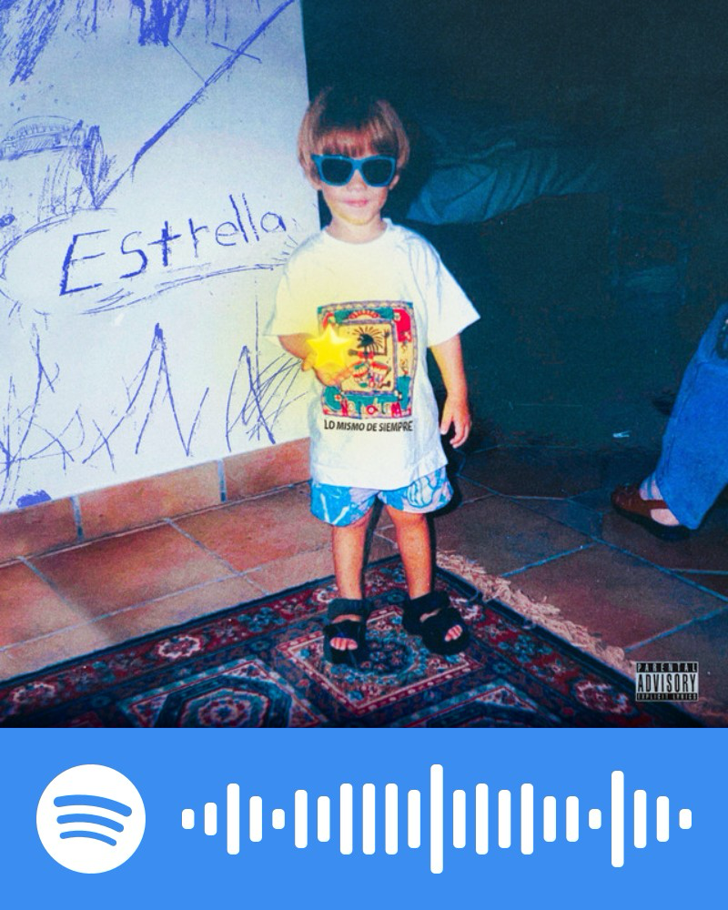
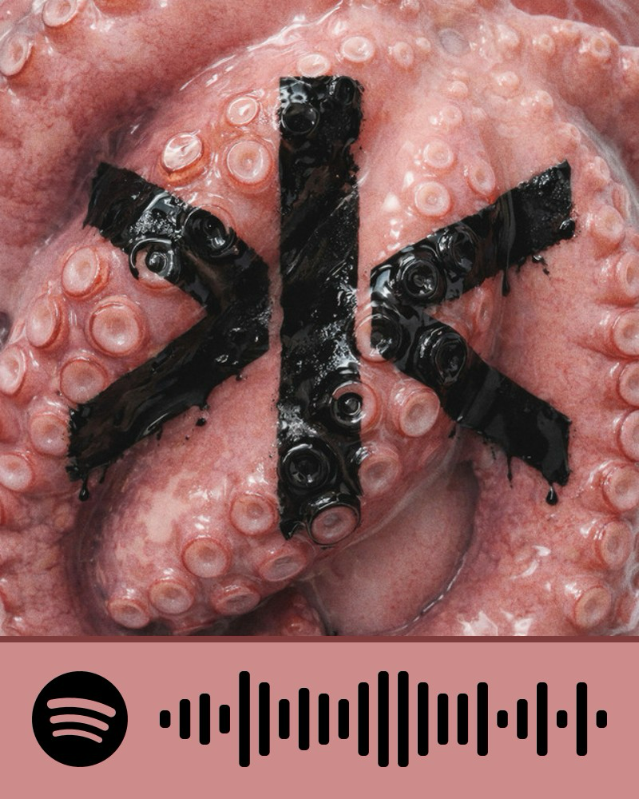
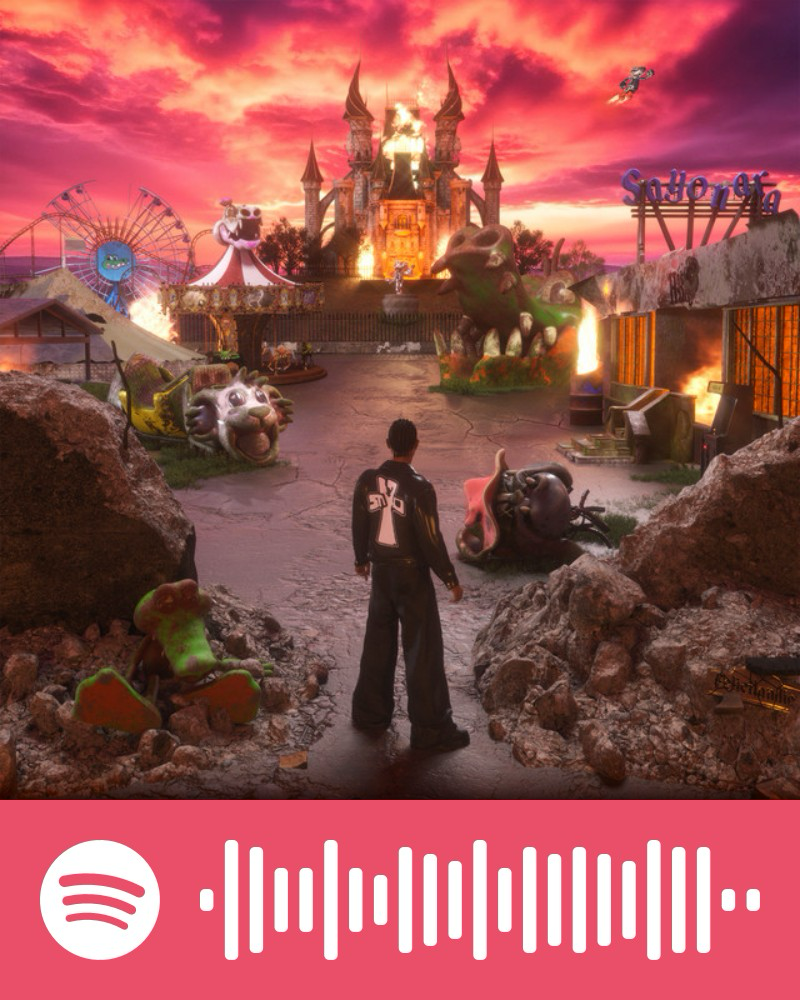
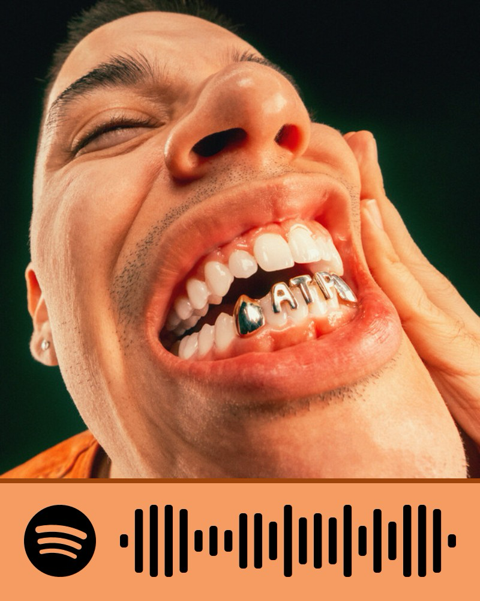

Explicaciones

Más canciones
a ti, a nosotrosNo quiero ser muy pesado, lo mencioné en la página de inicio y tengo que decirte que haber vivido tantos cambios en tan poco tiempo, entre trabajo, graduaciones, proyectos, torneos y sucesos tan raros, me hacían tener mucha menos paciencia. Todo esto hacía que me quisiera encerrar en mi cuarto o mi casa con más frecuencia, salir menos y bueno, hacer detalles como este o como organizar salidas mucho menos.
Tengo que confesarte que muchas veces me frené al confiar por detalles: lo que alguna vez platicamos del clasismo, cosas que escuchaba de Arizpe, actitudes que veía en ti que no me gustaban. Siempre que algo así pasaba me daba miedo seguir; encontrar más detalles o cosas que me pudieran molestar de ti me hacía más cauteloso y eventualmente distante.
También he pensado mucho en lo que alguna vez te dijo tu mamá, y realmente creo que pensamos de formas muy distintas, no solo en necesidades y gustos como dijimos en los últimos mensajes, sino en la ideología real que tenemos. La velocidad con la que siquiera hablamos de si queríamos o no casarnos me hizo dar un paso atrás. El saber que te querías casar y tan rápido también; no te culpo ni te recrimino, solo quería hacértelo saber.
No sé si esto debería ir aquí o en la de perdón, pero cuando empezamos a salir no quería una relación sabiendo que tuve un trauma bastante fuerte en mi última relación, al grado que fue una de las razones por las que me fui de CDMX. Ahora sé cómo afrontar ese trauma o idea y lamento que haya sido a coste de nuestra relación.
De verdad me encanta pasar tiempo contigo, pero sé que no es sano ni para ti ni para mí. El estar jugando al sí o no, no está padre a menos que los dos sepamos. No quiero lastimarte más, tampoco quiero volver a intentarlo, y creo que lo mejor es no hablar o hacerlo lo menos posible. Todavía no tengo certeza de qué pueda ser lo mejor, solo sé que tenía que externarte algunas cosas.

que me recuerdan
Gracias